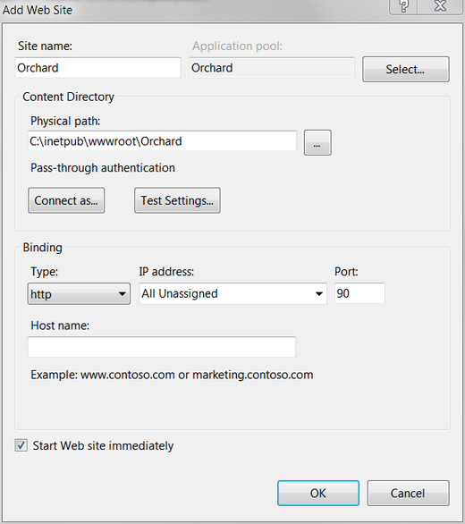
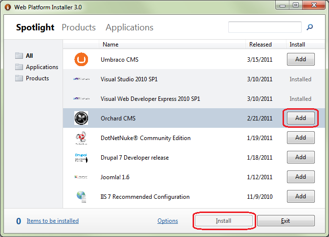
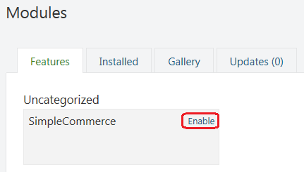
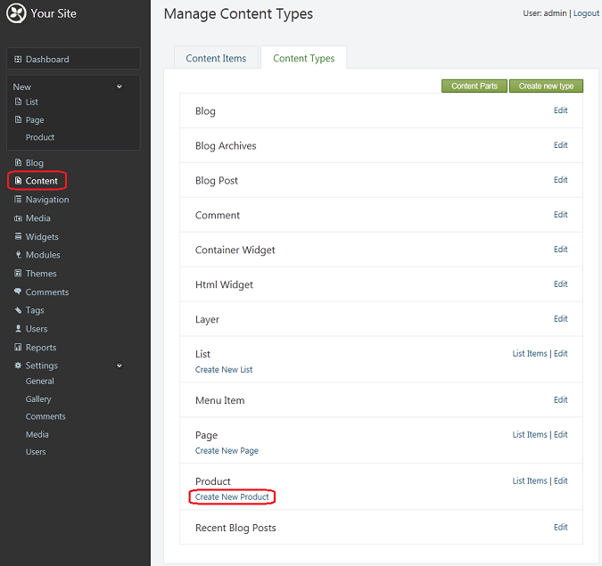

In this tutorial, you will learn how to develop a simple commerce module using only a text editor.
If you do not have the Web Platform Installer on your computer, download it before beginning this tutorial.
This guide has been marked for review. If you are just getting started with Orchard module development you should read the Getting Started with Modules course first. It will introduce you to building modules with Orchard using Visual Studio Community, a free edition of Visual Studio.
Setting Up the Orchard Site
First, you will set up a new Orchard website. If you already have a site set up, you can skip this section and jump directly to the code generation section. To start the setup, open IIS Manager, right-click Sites, and click Add Web Site.

In the Add Web Site dialog box, fill in the fields to point the new website to a folder, such as \inetpub\wwwroot\Orchard. Name the new site Orchard and give it an unused port, such as 90. Use the default application pool (.NET 4.0 integrated pipeline). Click OK.

From the Windows Start menu, launch Web Platform Installer, select Orchard CMS, click Add, and then click Install.

After you accept the license terms, Orchard is installed.
Open a command window and change the current directory to point to the root of the site. Then run bin\orchard.exe.

Type help commands to get the list of available commands. For now, only the help and setup commands are available. However, as Orchard is developed and modules are activated, new commands will become available. (The Orchard command-line executable actually discovers the commands from the modules inside of the application.)
To set up the site, enter the following command:
setup /SiteName:Orchard /AdminUsername:admin /AdminPassword:123456
/DatabaseProvider:SqlCe
This is equivalent to setting up the site from the web interface.
Leave the command window open. (In fact, don't close it until you have finished this tutorial.)
Generating Code for the Module
Now you are ready to start developing the commerce module. Orchard provides a code generation feature that sets up the structure of an empty module to help you get started. By default, code generation is disabled. So you must first install and enable the feature. The easiest way to do this is to go to Modules in the admin UI and then click the "Gallery" tab. Do a search for "code generation" and then install the module.
To enable code generation, if you didn't do so right after install, you may enter the following command in the command window:
feature enable Orchard.CodeGeneration
You will use a code-generation command to create a commerce module. Enter the following command:
codegen module SimpleCommerce
Open a Windows Explorer window and browse to the newly created \inetpub\wwwroot\Orchard\Modules\SimpleCommerce folder. Open the module.txt file using a text editor.
Change the description to "A simple commerce module". Change the description of the feature to be "A simple product part". Save the file and close it. The following example shows the complete module.txt file after the changes.
Name: SimpleCommerce
AntiForgery: enabled
Author: The Orchard Team
Website: http://orchardproject.net
Version: 0.5.0
OrchardVersion: 0.5.0
Description: A simple commerce module
Features:
SimpleCommerce:
Name: Simple Commerce
Description: A simple product part.
Category: Commerce
Creating the Model for the Part
Next, you will create a data model that is a representation of what will be stored in the database.
In Modules/SimpleCommerce/Models, create a Product.cs file and add the following content:
using System.ComponentModel.DataAnnotations;
using Orchard.ContentManagement;
using Orchard.ContentManagement.Records;
namespace SimpleCommerce.Models {
public class ProductPartRecord : ContentPartRecord {
public virtual string Sku { get; set; }
public virtual float Price { get; set; }
}
public class ProductPart : ContentPart<ProductPartRecord> {
[Required]
public string Sku {
get { return Retrieve(r => r.Sku); }
set { Store(r => r.Sku, value); }
}
[Required]
public float Price {
get { return Retrieve(r => r.Price); }
set { Store(r => r.Price, value); }
}
}
}
This code has two properties, Sku and Price, that are virtual in order to enable the creation of a dynamic proxy that will handle persistence transparently.
The code also defines a content part that derives from ContentPart<ProductPartRecord> and that exposes the SKU and price from the record as public properties and infoset. You can find more info about infoset here. The properties have attributes that will surface in the UI as validation tests.
In order for the application to pick up the new file, you need to add it to the module's project file. Open the SimpleCommerce.csproj file and look for "assemblyinfo.cs". After that line, add the following:
<Compile Include="Models\Product.cs" />
Save the file, but leave it open, because you will make additional changes to it throughout the tutorial.
Navigate to the site in your browser to make sure the application's dynamic compilation feature picks up the new part and record. You will know that everything is working if you go to the Features administration screen and see the new SimpleCommerce feature.
In the command window, enable the new feature using the following command:
feature enable SimpleCommerce
Creating the Initial Data Migration File
Data migration is a pattern that enables an application or component to handle new versions gracefully, without any data loss. The main idea is that the system keeps track of the current version installed and each data migration describes the changes to go from one version to the next. If the system detects that there is a new version installed and the current data is from a previous version, the administrator of the site is prompted to upgrade. The system then runs all necessary migration methods until the data version and the code version are in sync.
Start by creating the initial migration for the new module, which will just create the data tables that are needed. In the command window, enter the following command:
codegen datamigration SimpleCommerce
This creates the following Migrations.cs file:
using System;
using System.Collections.Generic;
using System.Data;
using Orchard.ContentManagement.Drivers;
using Orchard.ContentManagement.MetaData;
using Orchard.ContentManagement.MetaData.Builders;
using Orchard.Core.Contents.Extensions;
using Orchard.Data.Migration;
namespace SimpleCommerce.DataMigrations {
public class Migrations : DataMigrationImpl {
public int Create() {
// Creating table ProductPartRecord
SchemaBuilder.CreateTable("ProductPartRecord", table => table
.ContentPartRecord()
.Column("Sku", DbType.String)
.Column("Price", DbType.Single)
);
return 1;
}
}
}
The method name Create is the convention for the initial data migration. It calls the SchemaBuilder.CreateTable method that creates a ProductPartRecord table that has Sku and Price columns in addition to the columns from the basic ContentPartRecord table.
Notice that the method returns 1, which is the version number for the migration.
Add another migration step to this in order to illustrate how you can later alter the existing schema and type metadata as the module evolves. In this case, you will take this opportunity to add a feature that will enable the part to be attached to any content type. Add the following method to the data migration class:
public int UpdateFrom1() {
ContentDefinitionManager.AlterPartDefinition("ProductPart",
builder => builder.Attachable());
return 2;
}
This new migration is named UpdateFrom1, which is the convention for upgrading from version 1. Your next migration should be called UpdateFrom2 and return 3, and so on.
Make sure the following line is present in the .csproj file. (It should already have been added by the code generation command.)
<Compile Include="Migrations.cs" />
Navigate to the Features screen in the dashboard. You see a warning that indicates that one of the features needs to be updated, and the Simple Commerce module is displayed in red. Click Update to ensure that the migrations are run and that the module is up to date.
Adding a Handler
A handler in Orchard is analogous to a filter in ASP.NET MVC. It's a piece of code that is meant to run when specific events happen in the application, but that are not specific to a given content type. For example, you could build an analytics module that listens to the Loaded event in order to log usage statistics. To see what event handlers you can override in your own handlers, examine the source code for ContentHandlerBase.
The handler you need in the module is not going to be very complex, but it will implement some plumbing that is necessary to set up the persistence of the part. We hope that this kind of plumbing will disappear in a future version of Orchard, possibly in favor of a more declarative approach such as using attributes.
Create a Handlers folder and add a ProductHandler.cs file to it that contains the following code:
using Orchard.ContentManagement.Handlers;
using SimpleCommerce.Models;
using Orchard.Data;
namespace SimpleCommerce.Handlers {
public class ProductHandler : ContentHandler {
public ProductHandler(IRepository<ProductPartRecord> repository) {
Filters.Add(StorageFilter.For(repository));
}
}
}
Add the file to the .csproj file so that dynamic compilation can pick it up, using the following line:
<Compile Include="Handlers\ProductHandler.cs" />
Adding a Driver
A driver in Orchard is analogous to a controller in ASP.NET MVC, but is well adapted to the composition aspect that is necessary in web content management systems. It is specialized for a specific content part and can specify custom behavior for well-known actions such as displaying an item in the front end or editing it in the administration UI.
A driver typically has overrides for the display and editor actions. For the product part, create a new Drivers folder and in that folder create a ProductDriver.cs file that contains the following code:
using SimpleCommerce.Models;
using Orchard.ContentManagement.Drivers;
using Orchard.ContentManagement;
namespace SimpleCommerce.Drivers {
public class ProductDriver : ContentPartDriver<ProductPart> {
protected override DriverResult Display(
ProductPart part, string displayType, dynamic shapeHelper)
{
return ContentShape("Parts_Product",
() => shapeHelper.Parts_Product(
Sku: part.Sku,
Price: part.Price));
}
//GET
protected override DriverResult Editor(ProductPart part, dynamic shapeHelper)
{
return ContentShape("Parts_Product_Edit",
() => shapeHelper.EditorTemplate(
TemplateName: "Parts/Product",
Model: part,
Prefix: Prefix));
}
//POST
protected override DriverResult Editor(
ProductPart part, IUpdateModel updater, dynamic shapeHelper)
{
updater.TryUpdateModel(part, Prefix, null, null);
return Editor(part, shapeHelper);
}
}
}
The code in the Display method creates a shape to use when rendering the item in the front end. That shape has Sku and Price properties copied from the part.
Update the .csproj file to include the following line:
<Compile Include="Drivers\ProductDriver.cs" />
The Editor method also creates a shape named EditorTemplate. The shape has a TemplateName property that instructs Orchard where to look for the rendering template. The code also specifies that the model for that template will be the part, not the shape (which would be the default).
The placement of those parts within the larger front end or dashboard must be specified using a placement.info file that is located at the root of the module. That file, like a view, can be overridden from a theme. Create the placement.info file with the following contents:
<Placement>
<Place Parts_Product_Edit="Content:3"/>
<Place Parts_Product="Content:3"/>
</Placement>
Add the placement.info file to the .csproj file using the following line:
<Content Include="placement.info" />
Building the Templates
The last thing to do in order for the new content part to work is to write the two templates (front end and admin) that are configured in the driver.
Create the front-end template first. Create a Parts folder under Views and add a Product.cshtml file that contains the following code:
<br/>
@T("Price"): <b>$@Model.Price</b><br />
@Model.Sku<br/>
This is very plain rendering of the shape. Notice the use of the T method call to wrap the "Price" string literal. This enables localization of that text.
The administration view is a little heavier on HTML helper calls. Create an EditorTemplates folder under Views and a Parts folder under that. Add a Product.cshtml to the Parts folder that contains the following code:
@model SimpleCommerce.Models.ProductPart
<fieldset>
<label class="sub" for="Sku">@T("Sku")</label><br />
@Html.TextBoxFor(m => m.Sku, new { @class = "text" })<br />
<label class="sub" for="Price">@T("Price")</label><br />
@Html.TextBoxFor(m => m.Price, new { @class = "text" })
</fieldset>
Add those two templates to the .csproj file using the following lines:
<Content Include="Views\Parts\Product.cshtml" />
<Content Include="Views\EditorTemplates\Parts\Product.cshtml" />
Putting it All Together into a Content Type
The content part that you've put together could already be composed from the administration UI into a content type (see Creating Custom Content Types), but per the goal of this topic, you will continue by writing code using a text editor.
You will now build a new Product content type that will include the Product part and a number of parts that you can get from Orchard. So far, you have been focused on your specific domain. This will now change and you will start integrating into Orchard.
To build the content type from a new migration, open the Migrations.cs file and add the following method to the class:
public int UpdateFrom2() {
ContentDefinitionManager.AlterTypeDefinition("Product", cfg => cfg
.WithPart("CommonPart")
.WithPart("RoutePart")
.WithPart("BodyPart")
.WithPart("ProductPart")
.WithPart("CommentsPart")
.WithPart("TagsPart")
.WithPart("LocalizationPart")
.Creatable()
.Indexed());
return 3;
}
Also add using Orchard.Indexing; to the top of the file.
What you are doing is creating (or updating) the Product content type and adding to it the ability to have its own URL and title (RoutePart), to have a rich text description (BodyPart), to be a product, to be commented on (CommentsPart), to be tagged (TagsPart) and to be localizable (LocalizationPart). It can also be created, which will add a Create Product menu entry, and it will also enter the search index (Indexed).
To enable your new module, open the Orchard dashboard and click Modules. Select the Features tab, find the SimpleCommerce module, and click Enable.

To add a new Product content type, click Content on the dashboard, select the Content Types tab, find Product, and click Create New Product.

You now have a product editor that features your Sku and Price fields.
The code for this module can be downloaded from the following page: Orchard.Module.SimpleCommerce.0.5.0.zip